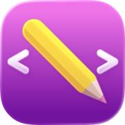
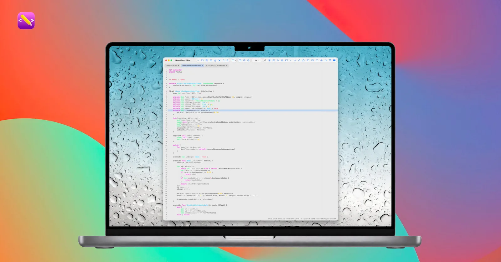
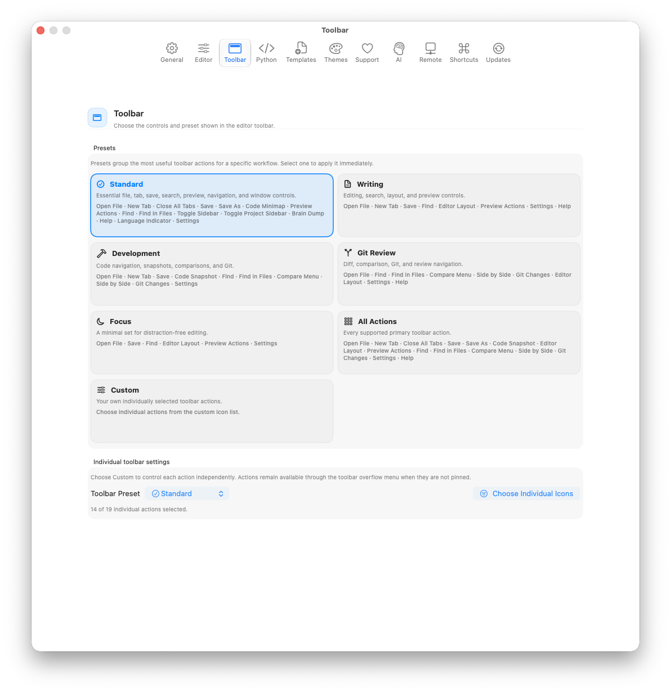
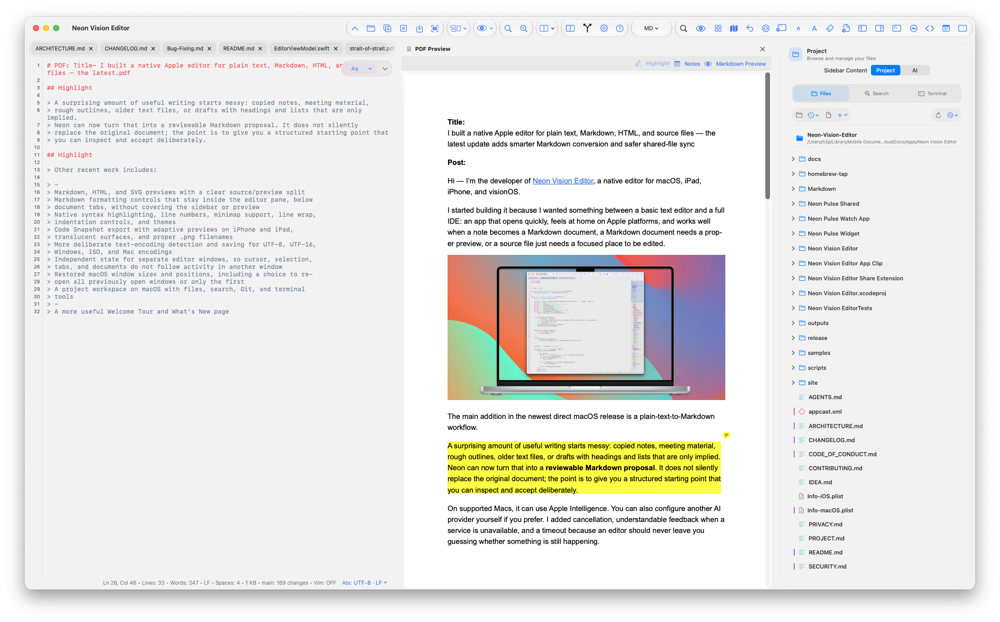
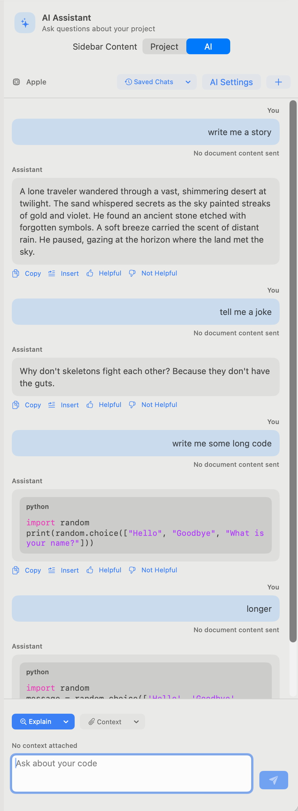
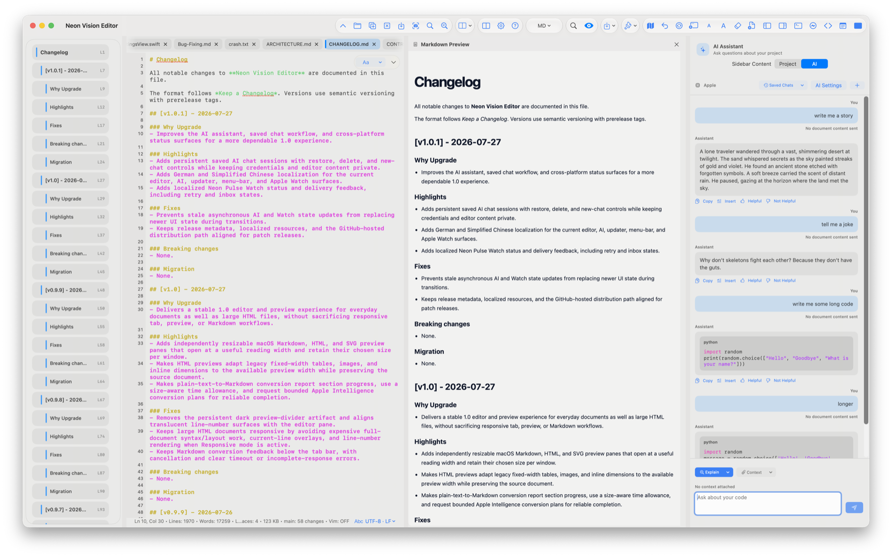
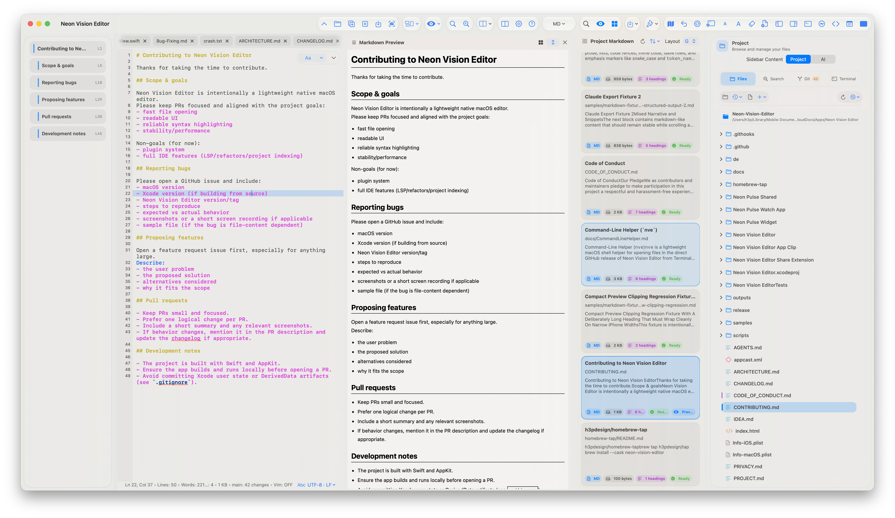
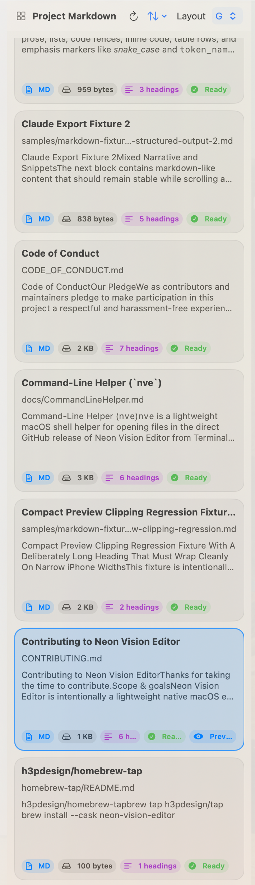
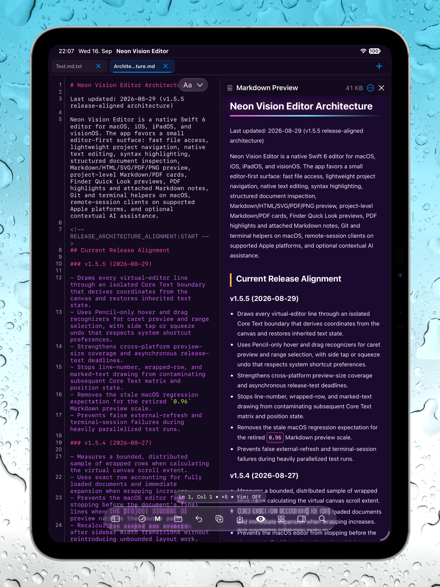
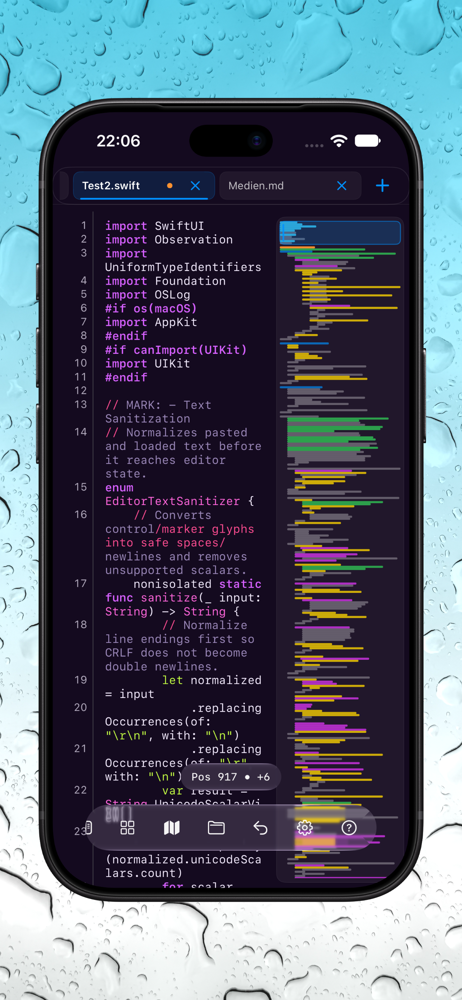

App Store
Apple-managed installation across the supported Apple platforms. Store releases can trail the direct channel during review.
Open App Store
Neon Vision EditorNative editing across Apple devices
For Markdown writers and developers, Neon Vision Editor keeps the useful parts of a lightweight editor: fast files, clear source, full previews, and shared documents that do not surprise you.

Choose your release channel
Pick Apple-managed updates, the latest notarized Mac build, Homebrew, or an early TestFlight build.
Apple-managed installation across the supported Apple platforms. Store releases can trail the direct channel during review.
Open App StoreThe latest stable direct build, signed and notarized by Apple, with the optional command-line helper.
Download DMGInstall the same stable, notarized macOS release through the official Homebrew Cask.
brew install neon-vision-editor
Try upcoming fixes across Mac, iPhone, and iPad before they reach the public App Store.
Join TestFlightDeveloped by h3p
I’m Hilthart Pedersen, known as h3p, and on GitHub as h3pdesign. I build Neon Vision Editor as an independent Apple editor for the space between a basic text editor and a full IDE.
The main addition in the newest direct macOS release is a plain-text-to-Markdown workflow.
A surprising amount of useful writing starts messy: copied notes, meeting material, rough outlines, older text files, or drafts with headings and lists that are only implied. Neon can now turn that into a reviewable Markdown proposal. It does not silently replace the original document; the point is to give you a structured starting point that you can inspect and accept deliberately.
On supported Macs, it can use Apple Intelligence. You can also configure another AI provider yourself if you prefer. I added cancellation, understandable feedback when a service is unavailable, and a timeout because an editor should never leave you guessing whether something is still happening.
The feature I am personally happiest with, though, is shared-file sync.
If you keep documents in iCloud Drive, a network folder, or open the same file in another app, it is easy for an editor to either miss external changes entirely or, worse, overwrite the work currently in front of you.
Neon now watches open documents for external updates. If a file changes elsewhere and the open tab is clean, it refreshes in place without making you close and reopen the tab. The editor preserves the useful context around that refresh: cursor position, selection, scroll position, and the current preview source.
The everyday editor
Notes become documentation. A quick HTML edit needs a rendered check. A shared text file changes on another device. Neon is designed for these in-between moments, without turning the work into an IDE project.
Turn unstructured text into a Markdown proposal while keeping the original under your control.
Keep Markdown, HTML, and SVG source close to the rendered result instead of switching apps.
Refresh clean documents from iCloud Drive, network folders, or another app without replacing unsaved work.
New in v1.2.1
Version 1.2.1 adds platform-optimized toolbar presets with compact symbols and consistent controls across macOS, iPadOS, and iOS. Configure standard, focused, developer, review, or complete workflows from Settings, while iOS keeps its transparent status-bar composition.
Toolbar presets and layout stability
Compact labels keep macOS and iPadOS toolbars readable, while iPhone stays icon-first where space is limited. Presets make it easier to switch between everyday editing, focused writing, development, review, and the complete workspace.
The release also restores the transparent iOS status-bar and navigation-surface composition without changing the existing editor or preview layout.

New in v1.2.0
Version 1.2.0 expands Neon beyond source files and Markdown. PDFs and PNGs can now become part of a responsive project overview, while PDF highlights and attached Markdown notes keep research connected to the document you are reading.
PDF notes and project previews
Highlight a passage in a PDF, attach a Markdown note, and return to the same review context later. Project cards make Markdown and PDF documents easier to scan, while expensive artwork loads only for the cards that are visible.
On iPhone and iPad, double-tap a tab to close it without interrupting the existing unsaved-change protection. The result is a more deliberate workspace for research, documentation, and mixed-format projects.

From rough notes to useful structure
Copied notes, an old text document, or a rough outline often already contain the structure you need. Neon can turn that into a Markdown draft for review rather than silently changing the source.
Plain text → Markdown
On supported Macs, Markdown conversion can use Apple Intelligence. A separately configured provider can also be used when that is your preferred workflow. Either way, the result remains a proposal: you review the headings, lists, spacing, and emphasis before deciding what belongs in the document.
Cancellation, a clear unavailable state, and a safety timeout are part of the workflow. An editor should never leave you wondering whether a background action is still working.

New in version 1.0.2
Ask about the current file, project structure, or a selected snippet without leaving Neon. Responses stay in a saved, reviewable conversation, with Markdown formatting and syntax-highlighted code kept readable.


Shared-file sync
Documents kept in iCloud Drive, network folders, or another app can change while they are open. Neon watches for those changes and refreshes clean tabs in place—without forcing you to close and reopen the file.
It preserves the context that matters: the current cursor, selection, source viewport, and preview source. If you have unsaved edits, Neon does not replace the buffer. The existing review choices remain yours.
Clean tab: refresh the updated file in place.
Unsaved changes: keep the local version protected.
Review deliberately: choose Keep Local, Reload from Disk, or Compare.
Source and rendered result
Markdown is not an afterthought in Neon. On Mac and iPad, a full preview can sit beside the source document; on iPhone, it opens as a focused reading view. The formatting controls remain with the editor, below document tabs, without covering the preview or a project sidebar.
HTML and SVG preview follow the same idea: edit the source, then see the output without leaving the file workflow. It is less about publishing polish and more about getting a reliable visual answer while you work.

Included in v1.1
Markdown card previews turn a folder of documents into a calm, useful overview. Scan titles, paths, excerpts, file sizes, heading counts, images, file status, sorting, and the active-document indicator before opening the document you need.
Markdown card preview
When a project grows beyond one document, the card panel keeps the surrounding context visible. Choose a responsive grid or a focused stack, place it beside the Markdown preview, and select a card to focus the existing editor tab.
Cards stay lightweight and reviewable: bounded excerpts, heading counts, local image thumbnails, and clear status labels help you find the right file without opening a second editor or changing the source.


Editor evolution
Each release builds on the last: protecting shared work first, then making the editor more deliberate, restoring windows reliably, and hardening the document transition that ties the interface together.
Corrects the toolbar and settings regressions introduced around the v1.3.0 release.
Delivers the complete v1.3.1 toolbar and iPad correction set together with the final macOS Settings-window stabilization.
Restores a readable, centered syntax-language status in the macOS toolbar.
Makes Quick Look previews follow the active macOS light or dark appearance.
One native editor, different devices
Core editing travels across every platform. Desktop-only tools stay on macOS; compact and spatial layouts keep the document workflow without pretending to be a Mac.
| Capability | macOS | iPad | iPhone | visionOS |
|---|---|---|---|---|
| Markdown, HTML, SVG preview | Full Inline split pane |
Full Inline at regular width |
Compact Focused sheet |
Adaptive Spatial pane |
| Project sidebar | Full Files, Search, Git, Terminal |
Full Files and Search |
Compact Touch-first file workflow |
Adaptive Spatial workspace |
| PTY terminal | Full Project-aware shell |
— Desktop-only |
— Desktop-only |
— Desktop-only |
| Local Git tools | Full Changes, history, graph |
— Desktop-only |
— Desktop-only |
— Desktop-only |
| Code minimap | Full Opt-in and draggable |
Full Opt-in |
Compact Opt-in |
Adaptive Opt-in |
| Markdown conversion | Full Selection or document review |
Adaptive Review flow |
Compact Review flow |
Adaptive Review flow |
| Encoding controls | Full Detect, reopen, transcode, BOM |
Preserved Open and export |
Preserved Open and export |
Preserved Open and export |
iPad and iPhone
Keep the same document workflow on iPad and iPhone, with touch controls and focused layouts adapted to each device.


Help hub
Jump directly to the practical reference you need without searching the full project README.
nve command →
Release notes
What changed in the latest stable build →
Community discussions
Questions, ideas, and longer conversations →
Support independent development
Neon Vision Editor is built independently. Sponsorship helps sustain testing, documentation, reliable releases, and continued work across macOS, iPhone, iPad, and Apple Vision Pro.
Choose the support option that suits you. Every contribution is optional, and no editor feature is locked behind sponsorship.
Support ongoing open development through the platform where the project lives.
Become a sponsor MembershipChoose recurring support for the long-term work behind Neon and future apps.
Support on Patreon One-time tipMake a quick contribution when a release, fix, or new workflow helps you.
Buy a coffee Direct supportSend a flexible one-time contribution directly through PayPal.
Support via PayPalGet the latest direct macOS build, follow development on GitHub, or try the App Store and TestFlight versions across Apple devices.
{kind=link}
{kind=link}
{kind=link}
{kind=link}
{kind=link}
{kind=link}
{kind=link}
{kind=link}
{kind=link}